Tutorial - SpatialOmics¶
Spatial omics technologies are an emergent field and currently no standard libraries or data structures exists for handling the generated data in a consistent way. To facilitate the development of this framework we introduce the SpatialOmics class. Since we work with high-dimensional images, memory complexity is a problem. SpatialOmics stores data in a HDF5 file and lazily loads the required images on the fly to keep the memory consumption low. The design of this class is inspred by AnnData, a class developed for the analysis of single-cell data sets.
Objective
Data standard for consistent method development
Technology-agnostic (resolutions, multiplexing and modalities )
Attributes
X: Single-cell expression values (observations)
var: Annotation of features in X
obs: Annotation of observations
spl: Annotation of samples
G: Graph representation of observations
images: Raw images
masks: Segmentation masks
uns: Unstructured data

Load from Raw Data¶
import tarfile
import tempfile
from skimage import io
import os
import pandas as pd
import numpy as np
import matplotlib.pyplot as plt
from spatialOmics import SpatialOmics
# create empty instance
so = SpatialOmics()
Download Example Images¶
import urllib.request
import tarfile
# url from which we download example images
url = 'https://ndownloader.figshare.com/files/29006556'
filehandle, _ = urllib.request.urlretrieve(url)
Populate SpatialOmics Instance¶
Meta data¶
The downloaded meta data contains information about all the patients in the study. We only select the patient information of the relevant image.
Add image data¶
We use the add_image and add_mask function to add the image and cellmask data to the SpatialOmics instance. We can set to_store to True to save images in a HDF5 file on the disk.
# extract images from tar archive
fimg = 'BaselTMA_SP41_15.475kx12.665ky_10000x8500_5_20170905_122_166_X15Y4_231_a0_full.tiff'
fmask = 'BaselTMA_SP41_15.475kx12.665ky_10000x8500_5_20170905_122_166_X15Y4_231_a0_full_maks.tiff'
fmeta = 'meta_data.csv'
root = 'spatialOmics-tutorial'
with tempfile.TemporaryDirectory() as tmpdir:
with tarfile.open(filehandle, 'r:gz') as tar:
tar.extractall(tmpdir)
img = io.imread(os.path.join(tmpdir, root, fimg))
mask = io.imread(os.path.join(tmpdir, root, fmask))
meta = pd.read_csv(os.path.join(tmpdir, root, fmeta)).set_index('core')
# set sample data of spatialOmics
so.spl = meta.loc[meta.filename_fullstack == fimg]
spl = so.spl.index[0]
# add high-dimensional tiff image
so.add_image(spl, os.path.join(tmpdir, root, fimg), to_store=False)
# add segmentation mask
so.add_mask(spl, 'cellmasks', os.path.join(tmpdir, root, fmask), to_store=False)
Visualise¶
Visualise Raw Data¶
# visualise example img and cellmask
fig, axs = plt.subplots(1,2)
axs[0].imshow(mask > 0, cmap='gray')
axs[1].imshow(img[15,])
<matplotlib.image.AxesImage at 0x7fa7d14946d0>
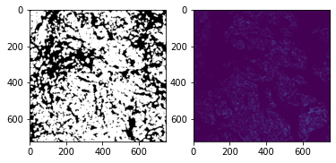
Visualise Data with Athena¶
import athena as ath
# extract centroids of observations
ath.pp.extract_centroids(so, so.spl.index[0], mask_key='cellmasks')
ath.pl.spatial(so, spl, None, mode='mask')
/Users/art/Documents/projects/athena/athena/plotting/visualization.py:217: UserWarning: Matplotlib is currently using module://matplotlib_inline.backend_inline, which is a non-GUI backend, so cannot show the figure.
fig.show()
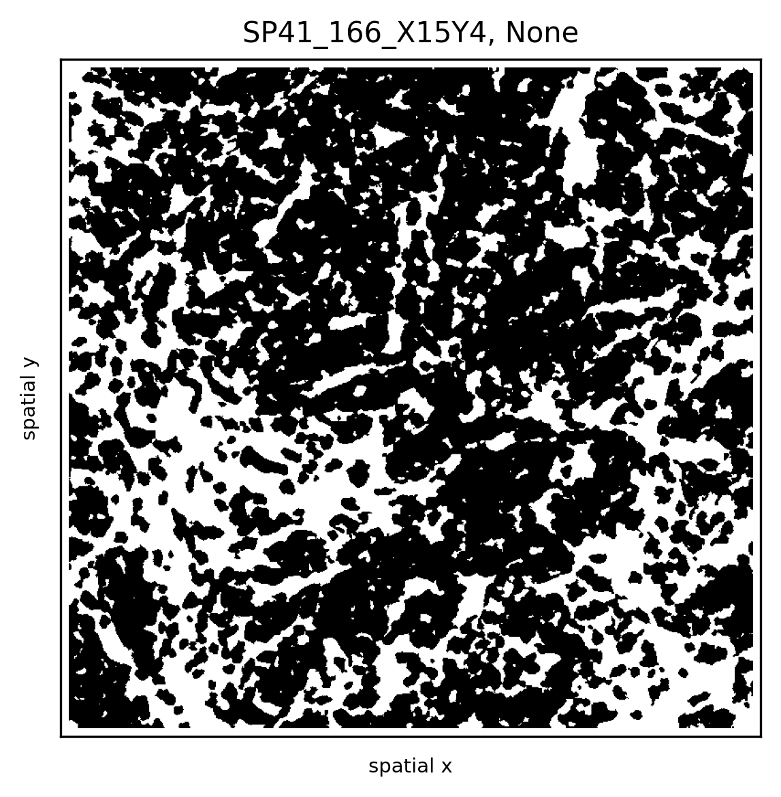
Extract Single-Cell Expression Values¶
Based on the cellmask we can extract sc protein expression values from the image.
import numpy as np
from tqdm import tqdm
expr = so.images[spl]
mask = so.masks[spl]['cellmasks']
ids = np.unique(mask)
ids = ids[ids != 0]
# extract single-cell expression values for each layer in the image
res = []
for i in tqdm(ids):
res.append(expr[:, mask == i].mean(1))
# add single cell expression values to spatialOmics instance
so.X[spl] = pd.DataFrame(np.stack(res, axis=0), index=ids)
so.X[spl]
100%|███████████████████████████████████████████████████████████████████████████████████████████████████████████████████████████████████████████████████████████| 3066/3066 [00:03<00:00, 779.03it/s]
| 0 | 1 | 2 | 3 | 4 | 5 | 6 | 7 | 8 | 9 | ... | 42 | 43 | 44 | 45 | 46 | 47 | 48 | 49 | 50 | 51 | |
|---|---|---|---|---|---|---|---|---|---|---|---|---|---|---|---|---|---|---|---|---|---|
| 1 | 504.166809 | 2.789689 | 0.932818 | 5.546103 | 4.836011 | 7.478273 | 13.754079 | 9.304479 | 11.435987 | 1.101779 | ... | 0.114558 | 0.922130 | 0.460403 | 11.155493 | 0.821286 | 7.141858 | 13.127857 | 4.487766 | 0.916052 | 0.027065 |
| 2 | 505.758942 | 2.674268 | 0.773134 | 4.117366 | 4.382695 | 5.827538 | 10.489146 | 8.184184 | 6.676378 | 0.500451 | ... | 0.069695 | 1.408488 | 0.940549 | 28.769440 | 1.303585 | 2.372439 | 4.156317 | 4.631183 | 0.823171 | 0.038183 |
| 3 | 508.826782 | 1.467071 | 0.430452 | 3.453262 | 3.192524 | 4.715620 | 8.948931 | 6.917524 | 5.500190 | 0.650714 | ... | 0.087429 | 0.856952 | 0.399071 | 21.614906 | 1.032905 | 1.630524 | 3.740691 | 4.537024 | 0.664929 | 0.084000 |
| 4 | 504.302216 | 1.514519 | 0.465135 | 2.714404 | 2.464943 | 3.109519 | 6.833097 | 4.575481 | 5.994712 | 0.426192 | ... | 0.057692 | 0.465808 | 0.416808 | 13.019441 | 0.625423 | 1.114288 | 2.582231 | 4.727558 | 0.812923 | 0.148673 |
| 5 | 501.418091 | 1.511736 | 0.669417 | 2.982694 | 3.212319 | 4.436403 | 8.498236 | 5.890807 | 4.390930 | 0.360083 | ... | 0.069625 | 0.406875 | 0.000000 | 0.066417 | 0.702208 | 1.957056 | 3.781848 | 4.303611 | 0.862278 | 0.105028 |
| ... | ... | ... | ... | ... | ... | ... | ... | ... | ... | ... | ... | ... | ... | ... | ... | ... | ... | ... | ... | ... | ... |
| 3064 | 505.311401 | 1.847369 | 0.613946 | 3.214667 | 2.686189 | 3.890982 | 7.952199 | 5.741549 | 6.344487 | 0.405703 | ... | 0.112162 | 2.999352 | 0.472649 | 14.226991 | 0.971306 | 1.405333 | 2.625270 | 4.385936 | 0.855937 | 0.101784 |
| 3065 | 504.140137 | 1.848185 | 0.504827 | 3.142593 | 3.033320 | 4.162964 | 8.994964 | 6.016098 | 6.993988 | 0.437247 | ... | 0.155000 | 1.422000 | 0.292173 | 11.051740 | 1.097259 | 1.936333 | 3.482408 | 4.358284 | 0.763556 | 0.084457 |
| 3066 | 510.190491 | 1.862593 | 0.624062 | 4.128098 | 3.428827 | 4.350506 | 9.958580 | 6.790135 | 9.688334 | 0.733333 | ... | 0.078691 | 0.388420 | 0.017420 | 0.321136 | 0.304716 | 4.284889 | 8.294691 | 4.289370 | 0.687062 | 0.037037 |
| 3067 | 508.075317 | 1.531667 | 0.329550 | 2.540484 | 2.060367 | 3.620867 | 6.987517 | 4.659233 | 10.906000 | 0.753383 | ... | 0.059033 | 0.350483 | 0.111883 | 1.587350 | 0.468950 | 2.887600 | 5.298084 | 4.096633 | 1.036050 | 0.033333 |
| 3068 | 505.771240 | 3.545152 | 1.213667 | 7.365060 | 7.081666 | 8.808517 | 17.917515 | 12.926970 | 9.014727 | 0.700152 | ... | 0.461303 | 0.514970 | 0.000000 | 0.841606 | 0.417091 | 3.045879 | 4.926606 | 4.412212 | 1.013667 | 0.072242 |
3066 rows × 52 columns
Load Pre-processed SpatialOmics¶
import athena as ath
so = ath.dataset.imc()
so
warning: to get the latest version of this dataset use `so = sh.dataset.imc(force_download=True)`
100%|███████████████████████████████████████████████████████████████████████████████████████████████████████████████████████████████████████████████████████████| 11.1G/11.1G [39:37<00:00, 5.00MB/s]
INFO:numexpr.utils:NumExpr defaulting to 8 threads.
SpatialOmics object with n_obs 395769
X: 347, (10, 3671) x (34, 34)
spl: 347, ['pid', 'location', 'grade', 'tumor_type', 'tumor_size', 'gender', 'menopausal', 'PTNM_M', 'age', 'Patientstatus', 'treatment', 'PTNM_T', 'DiseaseStage', 'PTNM_N', 'AllSamplesSVSp4.Array', 'TMALocation', 'TMAxlocation', 'yLocation', 'DonorBlocklabel', 'diseasestatus', 'TMABlocklabel', 'UBTMAlocation', 'SupplierPatientID', 'Yearofsamplecollection', 'PrimarySite', 'histology', 'PTNM_Radicality', 'Lymphaticinvasion', 'Venousinvasion', 'ERStatus', 'PRStatus', 'HER2Status', 'Pre-surgeryTx', 'Post-surgeryTx', 'Tag', 'Ptdiagnosis', 'DFSmonth', 'OSmonth', 'Comment', 'ER+DuctalCa', 'TripleNegDuctal', 'hormonesensitive', 'hormonerefractory', 'hormoneresistantaftersenstive', 'Fulvestran', 'microinvasion', 'I_plus_neg', 'SN', 'MIC', 'Count_Cells', 'Height_FullStack', 'Width_FullStack', 'area', 'Subtype', 'HER2', 'ER', 'PR', 'clinical_type']
obs: 347, {'cell_type', 'CellId', 'id', 'meta_label', 'core', 'phenograph_cluster', 'meta_id', 'cell_type_id'}
var: 347, {'channel', 'metal_tag', 'full_target_name', 'target', 'fullstack_index', 'feature_type'}
G: 7, {'radius', 'contact', 'knn'}
masks: 347, {'cellmasks'}
images: 347
Load Pre-processed AnnData-Datasets¶
IMC Data¶
import scanpy as sc
import squidpy as sq
from spatialOmics import SpatialOmics
import athena as ath
imc = sq.datasets.imc()
so = SpatialOmics.from_annData(imc)
imc
AnnData object with n_obs × n_vars = 4668 × 34
obs: 'cell type', 'sample_id'
uns: 'cell type_colors'
obsm: 'spatial'
so
SpatialOmics object with n_obs 4668
X: 1, (4668, 4668) x (34, 34)
spl: 1, []
obs: 1, {'x', 'sample_id', 'cell type', 'y'}
var: 1, set()
G: 0, set()
masks: 0, set()
images: 0
Here we convert str data types to numeric representations and migrate the colormaps
from matplotlib.colors import ListedColormap, hex2color
# we have some overhead here as we need to convert to numeric types for the ATHENA framework
spl = so.spl.index[0]
so.obs[spl]['cell_type_id'] = so.obs[spl].groupby('cell type').ngroup().astype('category')
# generate colormap
labs = so.obs[spl].groupby(['cell_type_id']).head(1)[['cell_type_id', 'cell type']].set_index('cell_type_id').to_dict()
cmap = ListedColormap([hex2color(i) for i in imc.uns['cell type_colors']])
so.uns['cmaps'].update({'cell_type_id':cmap})
so.uns['cmap_labels'].update({'cell_type_id': labs['cell type']})
Compute a neighborhood graph and the shannon index for each observation
# graph building, metrics
ath.graph.build_graph(so, spl, mask_key=None)
ath.metrics.shannon(so, spl, attr='cell_type_id')
Plot the sample with squidpy and ATHENA
fig, axs = plt.subplots(1,3, figsize=(12,4))
sc.pl.spatial(imc, color="cell type", spot_size=10, ax=axs[0], show=False)
ath.pl.spatial(so, spl, attr='cell_type_id', edges=True, ax=axs[1])
ath.pl.spatial(so, spl, attr='shannon_cell_type_id_knn', ax=axs[2])
fig.tight_layout()
fig.show() # double click on the figure to enlarge in a jupyter noteboook
/var/folders/kp/m1glkk8n16x4sszl9c8x90zc0000kp/T/ipykernel_77843/2910317332.py:6: UserWarning: Matplotlib is currently using module://matplotlib_inline.backend_inline, which is a non-GUI backend, so cannot show the figure.
fig.show() # double click on the figure to enlarge in a jupyter noteboook
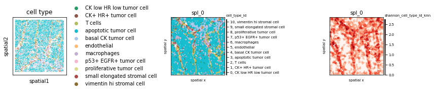
Fish Dataset¶
fish = sq.datasets.seqfish()
# plot AnnData
sc.pl.spatial(fish, color="celltype_mapped_refined", spot_size=0.03)
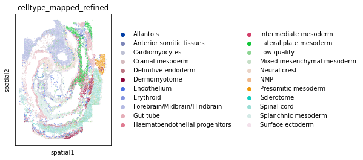
so = SpatialOmics.from_annData(fish)
spl = list(so.obs.keys())[0]
so
SpatialOmics object with n_obs 19416
X: 1, (19416, 19416) x (351, 351)
spl: 1, []
obs: 1, {'x', 'y', 'celltype_mapped_refined', 'sample_id', 'Area'}
var: 1, set()
G: 0, set()
masks: 0, set()
images: 0
# we have some overhead here as we need to convert to numeric types for our framework and migrate colormaps
col_uns_name = 'celltype_mapped_refined'
so.obs[spl]['cell_type_id'] = so.obs[spl].groupby(col_uns_name).ngroup().astype('category')
# generate colormap
from matplotlib import cm
labs = so.obs[spl].groupby(['cell_type_id']).head(1)[['cell_type_id', col_uns_name]].set_index('cell_type_id').to_dict()
cmap = ListedColormap([hex2color(i) for i in fish.uns[col_uns_name+'_colors']])
so.uns['cmaps'].update({'cell_type_id':cmap})
so.uns['cmap_labels'].update({'cell_type_id': labs[col_uns_name]})
so.uns['cmaps'].update({'default': cm.plasma})
# graph building, metrics, plot
ath.graph.build_graph(so, spl, mask_key=None)
ath.metrics.shannon(so, spl, attr='cell_type_id')
fig, axs = plt.subplots(1,2, figsize=(12,6))
# eges=True might take a while since we have so many data points
ath.pl.spatial(so, spl, attr='cell_type_id', edges=False, ax=axs[0])
ath.pl.spatial(so, spl, attr='shannon_cell_type_id_knn', background_color='black', node_size= 1, ax=axs[1])
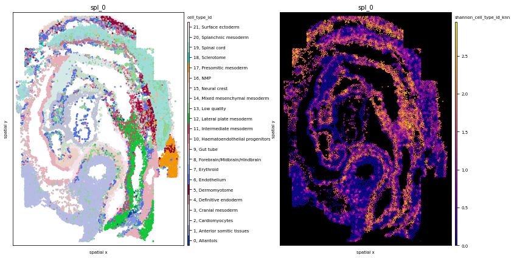
# neighborhood enrichment squidpy
sq.gr.spatial_neighbors(fish, coord_type="generic")
sq.gr.nhood_enrichment(fish, cluster_key="celltype_mapped_refined")
/usr/local/Caskroom/miniconda/base/envs/athena-dev/lib/python3.8/site-packages/tqdm/auto.py:22: TqdmWarning: IProgress not found. Please update jupyter and ipywidgets. See https://ipywidgets.readthedocs.io/en/stable/user_install.html
from .autonotebook import tqdm as notebook_tqdm
100%|██████████████████████████████████████████████████████████████████████████████████████████████████████████████████████████████████████████████████████████████| 1000/1000 [00:11<00:00, 84.02/s]
# neighborhood enrichment ATHENA, mode = observation
ath.neigh.interactions(so, spl, 'cell_type_id', mode='proportion')
# neighborhood enrichment ATHENA, mode = diff
# the first time, this takes up to 5min to compute the permutations, permutations are cached.
ath.neigh.interactions(so, spl, 'cell_type_id', mode='proportion', prediction_type='diff')
INFO:root:generate h0 for spl_0, graph type knn and mode proportion and attribute cell_type_id
Wed Jun 29 16:28:29 2022: 10/100, duration: 3.90) sec
Wed Jun 29 16:29:07 2022: 20/100, duration: 3.84) sec
Wed Jun 29 16:29:45 2022: 30/100, duration: 3.83) sec
Wed Jun 29 16:30:31 2022: 40/100, duration: 4.01) sec
Wed Jun 29 16:31:08 2022: 50/100, duration: 3.96) sec
Wed Jun 29 16:31:46 2022: 60/100, duration: 3.92) sec
Wed Jun 29 16:32:23 2022: 70/100, duration: 3.89) sec
Wed Jun 29 16:32:59 2022: 80/100, duration: 3.86) sec
Wed Jun 29 16:33:36 2022: 90/100, duration: 3.84) sec
Wed Jun 29 16:34:13 2022: 100/100, duration: 3.83) sec
Wed Jun 29 16:34:13 2022: Finished, duration: 6.38 min (3.83sec/it)
fig, axs = plt.subplots(1,2,figsize=(12,4))
sq.pl.nhood_enrichment(fish, cluster_key="celltype_mapped_refined", method="ward")
ath.pl.interactions(so, spl, 'cell_type_id', mode='proportion', prediction_type='observation', ax=axs[0])
ath.pl.interactions(so, spl, 'cell_type_id', mode='proportion', prediction_type='diff', ax=axs[1])
# re-label y-axis
for ax,title in zip(axs, ['observation', 'diff']):
ylab = ax.get_ymajorticklabels()
newlab = []
for lab in ylab:
n = so.uns['cmap_labels']['cell_type_id'][int(lab.get_text())] + f',{lab.get_text()}'
newlab.append(n)
ax.set_yticklabels(newlab)
ax.set_title(title)
fig.tight_layout()
fig.show()
/var/folders/kp/m1glkk8n16x4sszl9c8x90zc0000kp/T/ipykernel_77843/1980039856.py:16: UserWarning: Matplotlib is currently using module://matplotlib_inline.backend_inline, which is a non-GUI backend, so cannot show the figure.
fig.show()
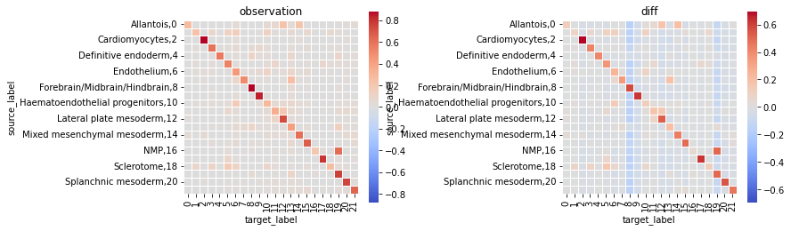
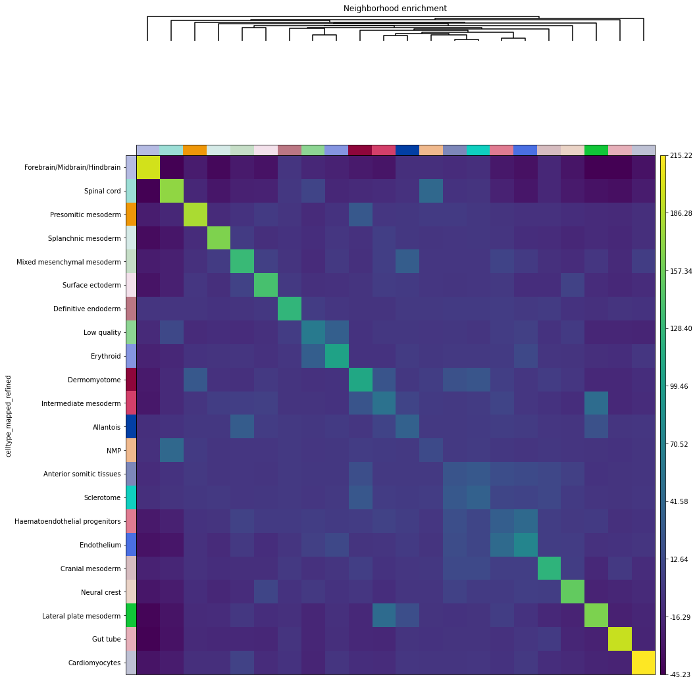
Visium Fluorescence Data¶
Load the data and process it according to the squidpy tutorial.
visium = sq.datasets.visium_fluo_adata_crop()
visium_img = sq.datasets.visium_fluo_image_crop()
sq.im.process(img=visium_img,layer="image",method="smooth")
sq.im.segment(img=visium_img, layer="image_smooth", method="watershed", channel=0, chunks=1000)
# plot AnnData
sc.pl.spatial(visium, color="cluster")
# convert to SpatialOmics
so = SpatialOmics.from_annData(visium, img_container=visium_img)
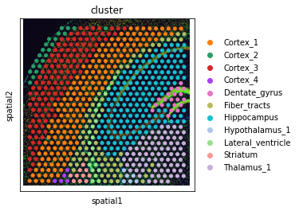
# we have some overhead here as we need to convert to numeric types for our framework
col_uns_name = 'cluster'
so.obs[spl]['cluster_id'] = so.obs[spl].groupby(col_uns_name).ngroup().astype('category')
# generate colormap
from matplotlib import cm
labs = so.obs[spl].groupby(['cluster_id']).head(1)[['cluster_id', col_uns_name]].set_index('cluster_id').to_dict()
cmap = ListedColormap([hex2color(i) for i in visium.uns[col_uns_name+'_colors']])
so.uns['cmaps'].update({'cluster_id':cmap})
so.uns['cmap_labels'].update({'cluster_id': labs[col_uns_name]})
so.uns['cmaps'].update({'default': cm.plasma})
# graph building, metrics, plot
ath.graph.build_graph(so, spl, mask_key=None)
ath.metrics.shannon(so, spl, attr='cluster_id')
fig, axs = plt.subplots(1,2, figsize=(12,6))
ath.pl.spatial(so, spl, attr='cluster_id', edges=True, node_size=20, background_color='black', ax=axs[0])
ath.pl.spatial(so, spl, attr='shannon_cluster_id_knn', background_color='black', node_size= 20, ax=axs[1])
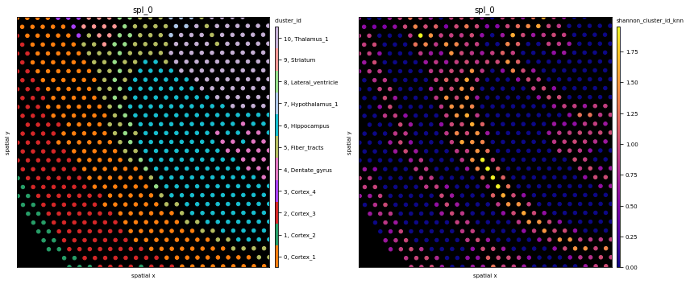
Visium Fluorescence Data - Alternative Processing based on Image Segmentation¶
Load Data¶
# we start again from the visium data set
so = SpatialOmics.from_annData(visium, img_container=visium_img)
Analyse Image Segmentation¶
In the upper left corner there are some segmentation artefacts. We simply remove them by setting the segmentation mask to 0 in this corner.
# remove segmentation mask artefacts
mask = so.masks[spl]['segmented_watershed'].squeeze().to_numpy().copy()
fig, ax = plt.subplots(1,2, figsize=(12,8))
ax[0].imshow(mask > 0, cmap='gray')
mask[:1000, :1000] = 0
ax[1].imshow(mask > 0, cmap='gray')
fig.show()
/var/folders/kp/m1glkk8n16x4sszl9c8x90zc0000kp/T/ipykernel_77843/830048520.py:7: UserWarning: Matplotlib is currently using module://matplotlib_inline.backend_inline, which is a non-GUI backend, so cannot show the figure.
fig.show()
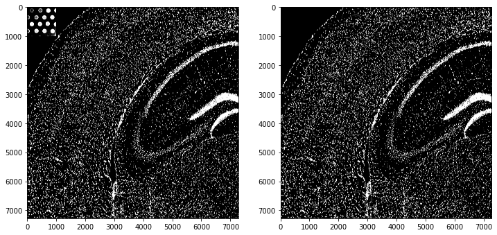
In a next step we proceed with a very simple processing of the segmentation mask. First we analyse the area distribution of the different mask. In the histogram we see that the area of the masks is in general < 2500. Furhtermore, we color each pixle in the image according to the size of the mask it belongs to. We can observe that in the Dentate region the segmentation did not work as desired and we have quite large masks there.
# area of segmentations
area = pd.Series(mask.flatten()).value_counts()
area = area[area.index != 0]
# color pixle according to the size of the cell they belong to
# segmentation is not good in Dentate region
mapping = area.to_dict()
mapping.update({0:0})
func = np.vectorize(lambda x: mapping[x], otypes=[int])
im = func(mask)
fig, axs = plt.subplots(1,2,figsize=(12,6))
axs[1].imshow(im, cmap='jet')
g = axs[0].hist(area, bins=100)
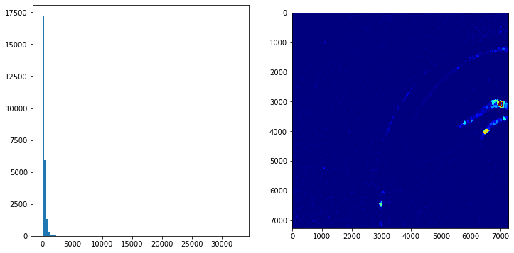
fig, axs = plt.subplots(1,3,figsize=(12,4))
# determine quantile values and show distributions of masks smaller than the .995 quantile
q995 = np.quantile(area, q=.995)
axs[0].hist(area[area < q995], bins=100)
# highlight small objects
small_objs = area.index[(area < 200) & (area > 100)]
tmp = mask.copy().astype(int)
tmp[np.isin(mask, small_objs)] = -1
axs[1].imshow(tmp < 0, cmap='gray')
# highlight the environment of such a object
x, y = np.where(mask == 28662)
xmin, xmax, ymin, ymax = x.min(), x.max(), y.min(), y.max()
pad = 200
axs[2].imshow(mask[xmin-pad:xmax+pad, ymin-pad:ymax+pad] > 0, cmap='gray')
<matplotlib.image.AxesImage at 0x7fa499dbc970>
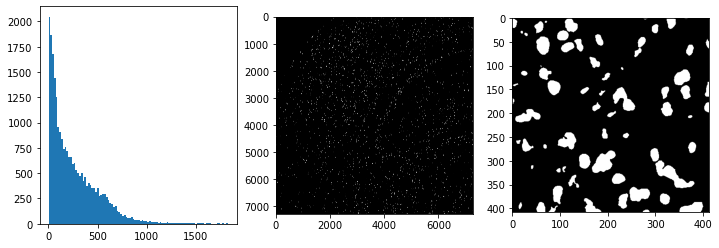
Based on the observations of the previous processing and visualisation steps we remove masks very small or very large
mask (area > q995 | area < 100).
# based on previous inspection discard every segmentation < 100 and >q995
excl = area.index[(area > q995) | (area < 100)]
mask[np.isin(mask, excl)] = 0
so.masks[spl]['cellmasks'] = mask
print(f'Number of masks after filtering: {len(np.unique(mask))}')
fig, axs = plt.subplots(1,2,figsize=(12,8))
axs[0].imshow(so.masks[spl]['segmented_watershed'].squeeze() > 0, cmap='gray')
axs[1].imshow(so.masks[spl]['cellmasks'] > 0, cmap='gray')
axs[0].set_title('raw segmentation masks'),axs[1].set_title('filtered segmentation masks')
fig.tight_layout();fig.show()
Number of masks after filtering: 16200
/var/folders/kp/m1glkk8n16x4sszl9c8x90zc0000kp/T/ipykernel_77843/445481155.py:11: UserWarning: Matplotlib is currently using module://matplotlib_inline.backend_inline, which is a non-GUI backend, so cannot show the figure.
fig.tight_layout();fig.show()
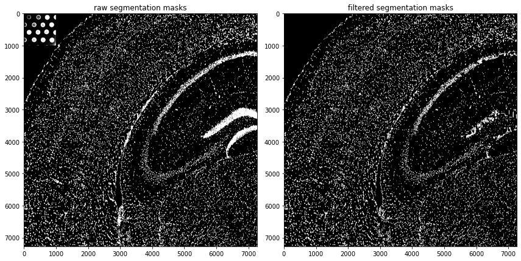
Extraction of Image Features for each Segmentation Mask¶
# extract image featuers for each object
from tqdm import tqdm
expr = so.images[spl].squeeze().to_numpy() # get rid of the z-dimension
mask = so.masks[spl]['cellmasks']
ids = np.unique(mask)
ids = ids[ids != 0]
# process a random sample due to computation time
ids = np.random.choice(ids,size=100)
# extract single-cell expression values, this takes 40 minutes!
res = []
for i in tqdm(ids):
res.append(expr[mask == i].mean(0)) # summary statistic used across all pixels: mean
100%|██████████████████████████████████████████████████████████████████████████████████████████████████████████████████████████████████████████████████████████████| 100/100 [00:18<00:00, 5.35it/s]
# construct SpatialOmics
so.X[spl] = pd.DataFrame(np.stack(res, axis=0), index=ids)
so.X[spl].columns = ['channel'+str(i) for i in so.X[spl].columns]
# compute cell-graph based on segmentation mask
ath.graph.build_graph(so, spl)
# construct obs
g = so.G[spl]['knn']
so.obs[spl] = pd.DataFrame(index=g.nodes)
so.var[spl] = pd.DataFrame(['channel'+str(i) for i in so.X[spl].columns], columns=['channels'])
ath.pp.extract_centroids(so, spl)
so.obs[spl] = so.obs[spl].loc[ids] # only keep ids for which we computed the features
# update default colormap
so.uns['cmaps'].update({'default': cm.plasma})
so
SpatialOmics object with n_obs 100
X: 1, (100, 100) x (3, 3)
spl: 1, []
obs: 1, {'x', 'y'}
var: 1, {'channels'}
G: 1, {'knn'}
masks: 1, {'cellmasks', 'segmented_watershed'}
images: 1
# plot original image, scatter and masks of channel0
fig, axs = plt.subplots(1, 2, figsize=(12,4), dpi=700)
visium_img.show('image', ax=axs[0])
axs[0].invert_yaxis()
ath.pl.spatial(so, spl, attr='channel0', ax=axs[1], node_size=1)
# this does not run if features were extracted for only a subset of ids
# ath.pl.spatial(so, spl, attr='channel0', mode='mask', ax=axs[2], background_color='black')
fig.tight_layout()
fig.show()
/var/folders/kp/m1glkk8n16x4sszl9c8x90zc0000kp/T/ipykernel_77843/4282301744.py:9: UserWarning: Matplotlib is currently using module://matplotlib_inline.backend_inline, which is a non-GUI backend, so cannot show the figure.
fig.show()